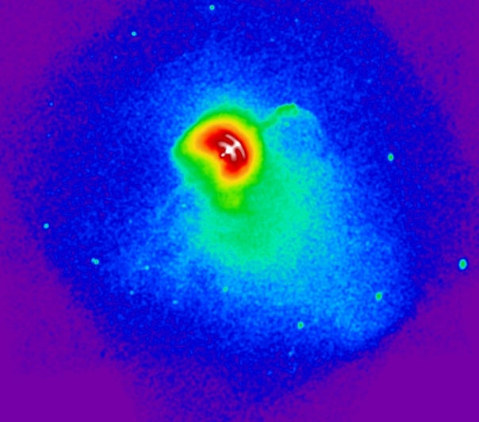

We look at many different aspects of astrophysical compact objects (neutron stars, pulsars, black holes)
to answer fundamental questions not only about these bizarre objects but also about related physical processes such as cosmic ray production, particle acceleration,
compact binary physics, accretion, and supernova remnant (SNR) evolution. We also to study the entire population
of Galactic X-ray sources (including black holes, microquasars, X-ray binaries).
Neutron stars are collapsed stars whose surfaces can be hot enough to emit radiation in ultraviolet and X-rays.
In addition many neutron stars manifest themselves as pulsars - objects that emit short intense bursts of radio waves, x-rays,
or visible electromagnetic radiation
at regular intervals. Due to the extreme conditions in the neutron star interiors, these objects can be used
as natural laboratories for studying the poorly understood properties of the superdense,
strongly magnetized, superconducting matter. Such conditions can never be reproduced in
Earth laboratories and therefore studying neutron stars provides the only way to learn about
the nuclear reactions and interactions of the elementary particles under these extreme conditions. This information is of fundamental importance for particle and quantum field physics.
Studying pulsar winds allows one to understand the complicated PWN morphologies, elucidate the dynamics of relativistic magnetized outflows and their interaction with the ambient
medium (e.g., host SNR), and learn about particle acceleration in magnetized relativistic plasmas. X-ray and
optical observations of neutron stars provide valuable diagnostics of all these processes.
Microquasars are the most extreme manifestations of stellar black holes. In these system (which are in many respects analogues to their supermassive counterparts in active galactic nuclei)
matter pulled from a massive companion star falls into a black hole or onto a neutron star. In this proccess the matter heats up to very high temperatures and emits intense X-ray radiation.
Due to the rapid rotation of the compact object s fraction of infalling matter is being ejected from the system along the compact object spin axis leading to formation of jets
whose nonthermal emission can be seen througout a wide range of frequencies. Some microquasars are also emit very high energy (VHE) radiation in GeV and TeV bands. The exact mechanism responsible for the VHE radiation is has not yet been established with several
possibilitites being currently explored.
Also learn about ghostly supernova remnants, another product of cosmic explosions!


Research Areas in Compact Object Astrohpysics:
- Pulsars winds and pulsar-wind nebulae;
- Thermal emission from neutron stars;
- Extended TeV sources and pulsar winds;
- Interaction processes in tight relativiestic binaries;
- Modeling of relativistic magnetized outflows;
- Searching galactic surveys for compact objects;
- Searching for nearby, relic neutron stars, trasient magnetars and isolated black holes;
- Radial-velocity searches for non-accreting black holes in binary systems;
- Classifying unidentified X-ray sources from Chandra and XMM-Newton observations;
- Modeling observational signatures from pulsars with shut-off pair cascades;
- Modeling properties of emission coming from the vicinity of the BH event horizon.
We have multi-university, international team:
- Oleg Kargaltsev, University of Florida, US
- Steve Eikenberry, University of Florida, US
- Martin Durant, University of Florida, US
- George Pavlov, Pennsylvania State University, US
- Gordon Garmire, Pennsylvania State University, US
- Chryssa Kouveliotou, NASA Marshall Space Flight Center, US
- David Kaplan, University of Wisconsin-Milwaukee, US
- Sangwook Park , University of Texas Arlington, US
- Andrei Bykov , Ioffe Physico-Technical Institute, Russia
- Zdenka Misanovic, Monash University, Australia
- Roberto Mignani, Kepler Institute of Astronomy, Poland
- Koji Mori, University of Miyazaki, Japan
Our group also includes several graduate and undergradue students working on various
projects at University of Florida and Penn State University. We welcome new students and postdocs willing to work with us in this exiting areas of High-Energy Astrophysics!
Our research is supported by vigorous observing program carried out on nearly all major space observatories (Chandra,
XMM-Newton, Suzaku, HST, Spitzer) as well as Gran Telescopio CANARIAS (Spain),
Very Large Array (New Mexico, US), and Australia Telescope Compact Array. Dr. Kargaltsev is also an associate member of VERITAS collaboration.

Find out more:
Recent Developments and Selected Recent Publications
- November 2012 - Chandra reveals the amaizing helical jet of the Vela Pulsar Read the Article
- August 2012 - First Absorption Features in the X-ray Spectrum of an Ordinary Radio Pulsar are discovered Read the Article
- August 2012 - Chandra pulsar survey (ChaPS) Read the Article
- March 2012 - X-Ray Observations of the New Unusual Transient Magnetar Swift J1834.9–0846 Read the Article
- January 2012 - Classifying X-ray sources in XMM-Newton Observations of Two Candidate Supernova Remnants Read the Article
- January 2012 - The Thermal Spectrum of the Recycled PSR J0437–4715 and Its White Dwarf Companion Read the Article
- November 2011 - Multiwavelength Spectroscopy of nearby PSR B0656+14 Read the Article
- June 2011 - Extended X-Ray Emission in the Vicinity of the Microquasar LS 5039 Discovered by Chandra X-ray Observatory Read the Article
- April 2011 - Chandra helps to solve the mystery of extended TeV Source HESS J1834-087 Read the Article
- March 2011 - Discovery of Extended X-ray Emission from the PSR B1259-63/SS 2883 Binary with Chandra Read the Article
- July 2010 - Thermal emission from the surface of middle-aged pulsar B1055-52 has been detected in far-UV with HST Read the Article
- January 2010 - A recently uncovered population of extended TeV sources and their link to pulsars are reviewed and discussed Read the Article
- September 2009 - An enigmatic ring of X-ray emission was found in Chandra observation of double neutron star binary J1906+0746 Read the Article
- April 2009 - Chandra studies X-Rays from supernova remnant G330.2+1.0 and the its central compact object Read the Article
- January 2009 - An unexpectedly bright X-Ray emission was detected from the very old pulsar J0108-1431 Read the Article See press release
- January 2009 - Chandra discovers a pulsar-wind nebula around young, energetic PSR J1617-5055 but the nature of the nearby VHE source HESS J1616-508 remains elusive Read the Article
- September 2008 - Oleg Kargaltsev and his collaborators discovered extremely long (>7 pc) tails behind two fast moving pulsars Read the Article
- September 2008 - We found an optical counterpart to the old, and possibly closest
to the Earth pulsar J0108-1431 Read the Article
- August 2008 - Our large (320 ks) program "The unique dynamical Vela pulsar-wind nebula" has beed accepted for Chandra AO-10!
- Febraury 2008 - Our review article on Pulsar-Wind Nebulae Read the Article
- August 2007 - We detected X-ray emission from planetary pulsar B1257+12. But why it is so dim? Read the Article
Press Releases
- January 2013 (upcoming) - Discovery of the remarkable periodic changes in the Vela pulsar jet ( movie and images ; paper accepted to ApJ )
- September 2012 - Discovery of first spectral features in the X-ray spectrum of isolated pulsar (Science paper )
The web page is maintained by Oleg Kargaltsev. Report questions, problems and broken links
to (kargaltsev at gwu.edu).
Last revision: March 2011